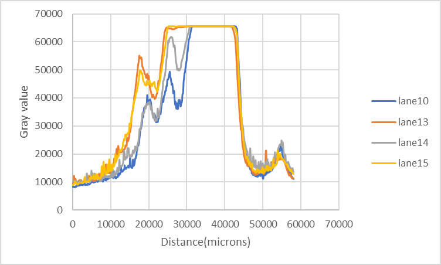

Main
Objective of our experiments
Here, we propose a system to realize gel swelling and shrinking, developed on an approach
based on DNA hybridization chain reaction(HCR) (See Idea fig.1 for further information about HCR).
Our system is what we call Reversible hybridization chain reaction(RHCR), in which DNA strands extending and regressing occur independently (See Idea for further information about RHCR).
In this experiment, we confirmed if DNA strands would extend and shrink by adding DNA hairpins performing RHCR.
Purpose & Method
Before we proceed to the RHCR experiment, we tried to examine the HCR extension by electrophoresis using DNA sequences based on Cangialosi et al., 2017. Therefore, performing experiments on HCR makes it possible to investigate both validity and experimental condition of RHCR, like thermo conditon, DNA concentration ratio and buffer concentration.
For this experiment, we performed polyacrylamide gel electrophoresis (PAGE) (See Material &Method for further information about electrophoresis) to confirm HCR. (We call A’ initiator and H1,H2 hairpin DNAs.) To experimentally show which sequence drives HCR, we prepared the 31 samples based on the existence/absence of 5 DNA components. We referred to S. Venkataraman et al., 2007 and fixated the concentration ratio of all five samples (A’:R’:H1:H2:L=1:1:4:4:2) because there should be more hairpin DNAs more than initiator DNAs for HCR reaction.
The results are shown in the figures below.
Results & Discussion
A

Fig.1 Confirmation of HCR Progression without L combination (overnight, at room temperature) At the same time, we performed another experiment for Fig.3 with A combination.(lane 16 to 18)
First, about 15 combination all without L combination, we conducted the experiment to confirm HCR.(Fig.2)
For hairpin DNAs, the bands observed above 20 bp were structures in the form of hairpins. Smeared bands caused by different size of structures formed by HCR were observed around 120 bp to 200 bp when A’ was added to the solution with hairpin DNAs (lane 13,15), enough for constructing tetramer, suggesting that HCR had occurred. (Fig.2)

Fig.2 Confirmation of HCR Progression with L combination (overnight, 1 hr kept at 37 degrees) 1hr kept being incubated at 37 degrees. They had been incubated for 48 hours before being incubated at 37 degrees. However, the one mixed together in Lane 16 was kept at 95 °C for five minutes and afterward cooled down by 1 °C per minute until the temperature reached 25 °C. We used same DNA samples as Fig.1B.
Second, in order to make sure L doesn’t directly involve with HCR, we conducted the experiment about 16 combination all with L to confirm HCR (Fig.2). As a result, compared to Fig.1, the bands overall shifted up by hybridizing L , suggesting that HCR occurred as well. Thus, we confirmed that L doesn’t directly involve with HCR.
Furthermore, smeared bands were observed in the presence of hairpin DNAs despite the absence of initiator (Fig.1, lane 10 & Fig.2, lane 13). This is considered to be an effect of a “leak reaction”. Here, leak reaction refers to the chain reaction that occurs without initiator. We considered that the leak reaction occurred because of arbitrary opening of H1 and H2. If H1 and H2 are opened even a little, HCR progression cannot be prevented. Thus, we are going to reexamine the experimental conditions to prevent the leaks anymore.
More importantly, we observed unexpected “extended DNA band ” (Fig.1, lane14 & Fig.2, lane 17). We have to think over the reason behind this phenomenon. However, we confirmed HCR occurrence successfully because we observed more smeared bands near the well in lane 13 & 15(Fig.1) and in lane 16 & 18(Fig.2) than in lane 14(Fig.1) and in lane 17(Fig.2). We confirmed it quantitatively below.(Fig.3) In lane 14(Fig.1) and in lane 17(Fig.2), we considered leak reaction of DNA hairpins occurred.
A
B

Fig.3 Quantitative analysis of HCR. (A: from 300 bp to 0 bp. B: from 300 bp to 80 bp. orange: lane 13, yellow: lane 15, gray: lane 14, blue: lane 10 of Fig.1) Distance from 300 bp to 80 bp based on the Fig.1. Gray value refers to the fluorescence intensity in the horizontal direction in the lane. The more gray value is, the more intense bands are observed in electrophoresis.
Here, in order to confirm that lane 13 & 15 are significantly different from lane 13(Fig.1), we analyzed the horizontal fluorescence intensity in each lane. As a result, we confirmed HCR occurred quantitatively.
<>br
We also analyzed lane 10 (Fig.1) to confirm the difference between the leak reaction and HCR quantitatively. As a result, we can suggest that HCR occurred in lane 13 & 15 (Fig.1).
To get a story straight, the results(Fig.1 lane 13 & 15, Fig.2 lane 16 and 18) matches with S. Venkataraman(2007), which means there is a high possibility for us to replicate conventional HCR.
Here, in order to make a longer band near the well, we decided to conduct the experiments below.
Make better the experimental condition, like incubation time, thermo condition and chairpin DNAs concentration .(See Supplementary information for further information about the experiments)
Incubation time (Fig.S1)
we performed the experiment when the incubation time was changed to 1hr, overnight. As a result, we confirmed 1 hr incubation is still enough for hybridization of our DNA components. Thus, we decided to incubate the prepared samples for 1 hour before electrophoresis.
Thermo condition
In general, at higher temperature, hybridization reaction will be accelerated. Thus, we tried to confirm the effect of thermo condition (Fig.3A). As a result, we observed more smeared bands near the well than the one at room temperature (Fig.1). Thus, we decided to perform the experiment at higher temperature than room temperature.
Hairpin DNAs concentration
We conducted the experiment to confirm the effect of higher hairpin DNAs concentration. As a result, there is no big change between the one with higher hairpin DNA concentration and the one with lower hairpin DNA concentration.(Fig.4B, lane 14 & 17) Thus, for hairpin DNA, 4 times as much concentration as the initiator is still enough for hybridization reaction.
Reaction limitation by R’
we tried to confirm C’ delays the HCR by restricting the toehold length.(Fig.4B lane 15 & 17) As a result, the one without R’ doesn’t differ from the one mixed altogether, suggesting that R’ doesn’t limit the hybridization in our DNA samples.
Fig.
BIOMOD1
Conclusion
BIOMMOD2